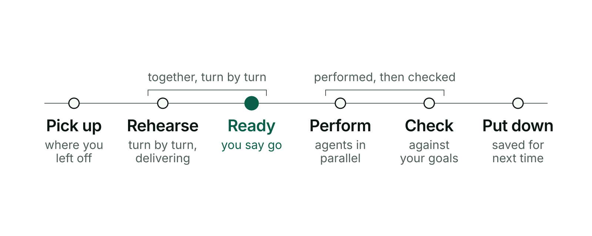
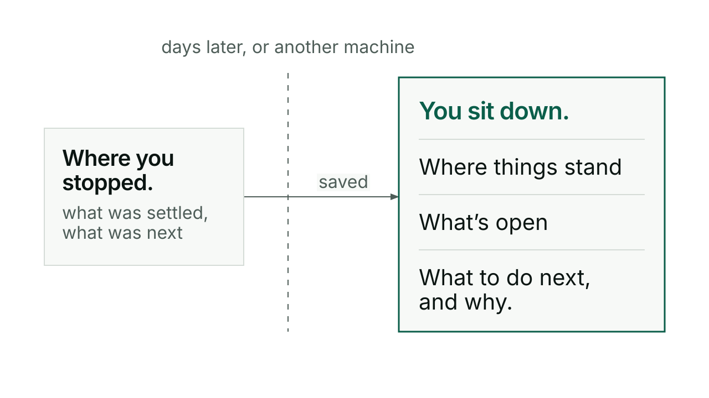
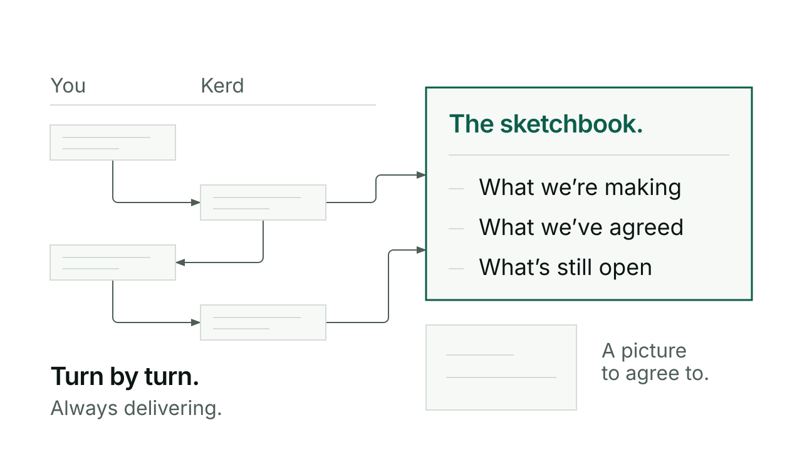
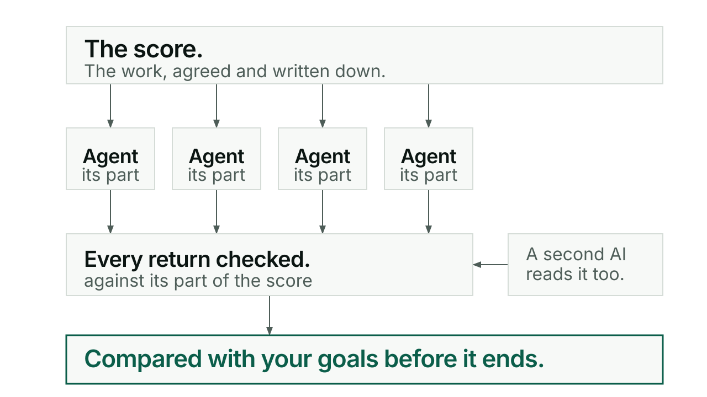

Kerd turns working with an AI from a string of chats into a piece of work.
It remembers where you are, helps you agree what you are making, then performs it with a team of agents and checks the result against what you asked for.
Kerd runs inside Claude Code or Codex.
A day with Kerd.

Three things that go wrong today.
You lose your place.
Every new chat starts from nothing, and you re-explain. With Kerd you sit down, and it tells you where things stand, what is open, and the one thing it would do next and why. On this machine or another.
This is Switch.

What you want never gets pinned down.
The AI starts building before either of you knows what done means. With Kerd you rehearse: work it through turn by turn, still delivering as you go, while it keeps a sketchbook of what is settled and draws pictures you can agree to. Ask “where are we?” at any time.
This is Conductor and Visuals.

It’s done when your spec and goals are met.
Everything stays turn by turn, and nobody checks the whole of it. With Kerd, once you are ready, the work is written as a score and performed as a concert: many agents, each with its own part, every return checked, the result compared with your goals before it ends. A second AI reads the work independently.
This is Conductor and Agent.

What Kerd lets you do.
Seven capabilities, in plain words. Each one has a guide.
Install.
In Claude Code: add the marketplace, then the plugin. For Codex, which takes a different route, see getting started.
claude plugin marketplace add anthonymaley/Kerd
claude plugin install kerd@kerd-marketplaceTry a version before adopting it, without touching your global setup.
claude --plugin-dir /absolute/path/to/kerdA same-name local plugin takes precedence for that session only. Closing it restores the ordinary setup; nothing is installed or disabled globally.
Then work: /kerd:switch in, answer its question, do the work,
/kerd:switch out.
Rolling back means pinning the marketplace to a commit, never keeping an old plugin file: cached versions are collected and go away. Getting started walks through a first sitting.